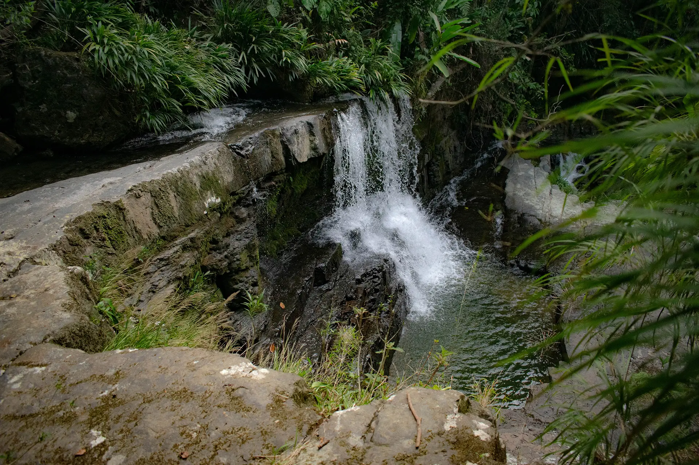
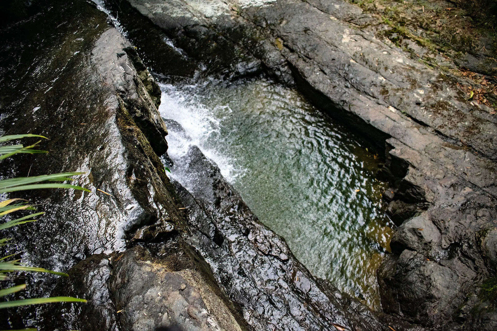
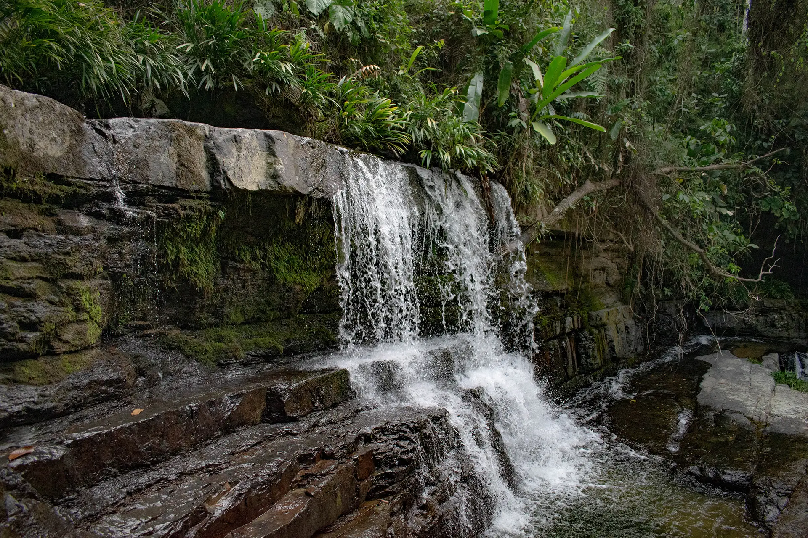

Para llegar es necesario ir acompañado de un guía, ya que el sitio permanece oculto entre la montaña. El trayecto puede hacerse en vehículo 4x4 hasta un punto y/o caminando, aunque el sol suele ser fuerte durante la ruta. Una vez alcanzado el lugar, el sendero se adentra en el bosque, ofreciendo una experiencia que combina aventura, naturaleza y descubrimiento.
A unos 3 km desde el hotel.
1390 msnm.
Calzado de buen agarre, repelente, bloqueador solar o parasol, traje de baño y tus snacks favoritos.
Este es un ecosistema protegido. Para mantener la pureza del agua y el entorno, promovemos un turismo de mínimo impacto y el respeto total por la fauna nativa.
Aguas profundas y cristalinas, ideales para nadar y relajarte después de la caminata.
Un espacio natural e increíble junto a la orilla, perfecto para pasar el día y parchar.